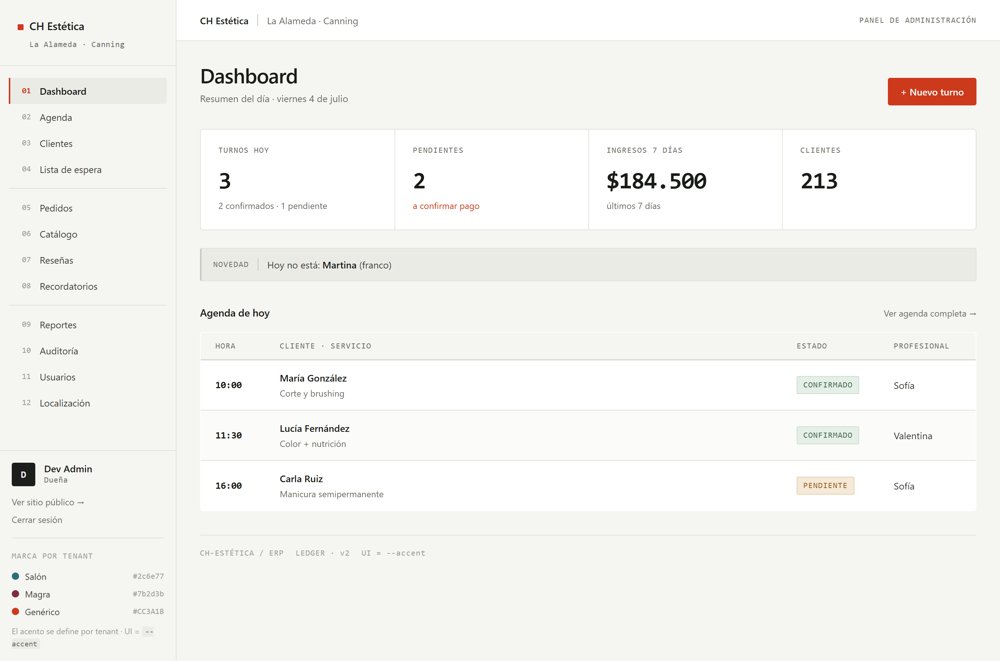
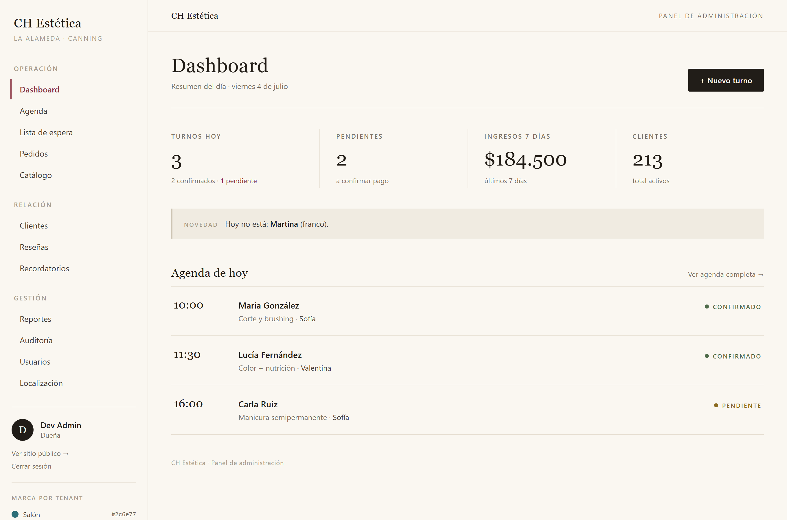
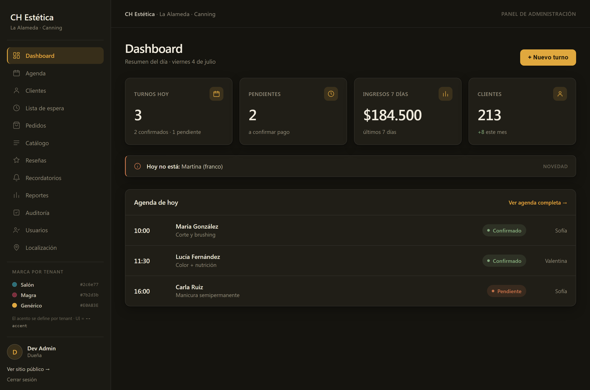
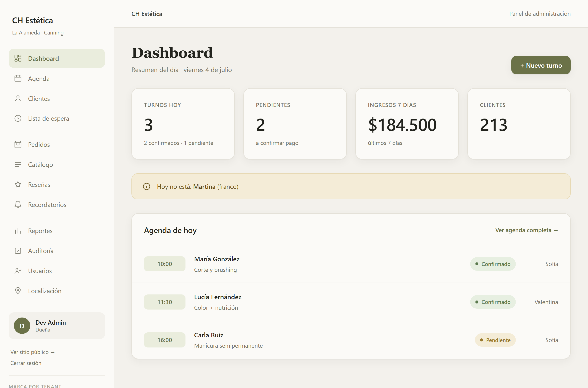
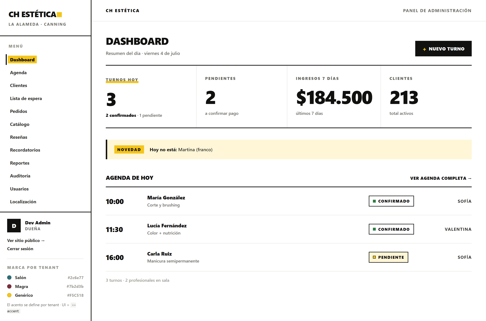

01
Ledger
Instrumento de precisión · técnico-suizo · dato primeroPor qué: posiciona el ERP como una herramienta seria y exacta, donde la legibilidad del dato manda. Sidebar como índice numerado 01–12, numerales monoespaciados tabulares, agenda como tabla real, elevación 100% por hairlines (sin sombras). Para quien valora rigor y densidad ordenada.

02
Atelier
Editorial de autor · serif con carácter · boutiquePor qué: sensibilidad de revista/print. La personalidad sale de la tipografía (serif de display, versalitas) y la composición (KPIs como stat-block con hairlines verticales), no del color. Cálido y humano, con restraint cromático. Para una marca que quiere sentirse crafted y premium sin gritar.

03
Nocturne
Oscuro cálido premium · sereno, no neónPor qué: un workspace nocturno calmo y de alta gama. Oscuro con subtono tierra (no el azul frío del dark-SaaS), texto hueso y un ámbar desaturado como único acento. Elevación por bordes sutiles, sin glows. Para posicionamiento premium y menos fatiga visual en jornadas largas.

04
Horizon
Aireado y sereno · paleta avena/greige no obviaPor qué: claridad y calma con mucho aire y escala grande. Paleta greige/avena cálida con acento musgo — una elección adulta que esquiva tanto el gris-azulado genérico como el pastel. Encaja con el mundo bienestar/estética sin caer en el cliché. Para quien prioriza respirabilidad y cercanía.

05
Grid
Suizo/internacional · bold, alto contraste, estructuraPor qué: diseño asertivo y memorable. Grotesca en negrita, numerales enormes, reglas tinta gruesas y un amarillo señal usado con moderación (bloques y marcadores, nunca como texto). Plano, confiado, con fuerte identidad. Para una marca que quiere destacarse y comunicar solidez.
